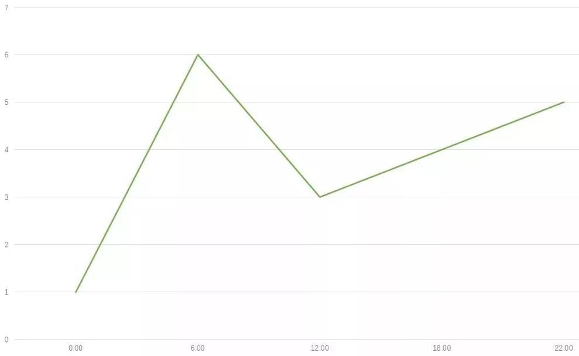

- 读得慢，长期下来读得少。
这个跟记忆单词同样的道理，花5分钟深刻记忆1个单词，第二天又忘了。如果你5分钟能够快速扫过10个单词，按照遗忘率是70%，你记住了3个单词。
- 阅读中有30％～50％都是没用的。
- 敲打节拍来避免大脑阅读出声，以刺激皮层，但不可依赖过多。
- 情绪是可以操纵的，尽量往好的方向引导，行为才会改变。
- 预习学会20％，上课学会50％，回顾学会100％，复习时应无新知识。
学习闭环 ↓
- 请教别人问题，讲述得越清楚，得到的答案也就越透彻。
不要问这种：“我数学基础差，该怎么办？” 因为这样的问题让人完全无从下手，你现在是几年级？数学成绩怎么样？哪一个知识板块比较弱导致成绩不好？
在提问之前，先自己总结，往往你总结之后方向更加清晰，别人对你指导更有锦上添花的效果。
这样的交流才是高效的，并且能够让老师更快地找到你的弱点在哪，还可能得到额外的指导。
- 先背概念或例子，有些抽象概念是要一定积累才能理解的。
- 跟同伴一起学，讨论能减少偏差。
- 给大脑0.5～9小时来处理信息，再回顾才会有新收获，不要在难点上停留。
- 锻炼左手，尝试用左手刷牙作为改变的开端。
- 随身携带小本子，记录想法和灵感。
- 把大事化为小步骤写在to-do list上，会更有成就感，效率也更高。
- 长时间学习后立即睡觉，大脑才能在睡眠中处理和加深知识。
- 倾听微弱的声音能提高注意力，每天练习3分钟。
- 新的单词用了7次才真正算自己的，一个新的知识点应用7遍才熟练。
- 学会寻找情绪高昂的物质来驱动自己。
- 利用空闲的等待时间来做事，随身携带小本子背点知识。
- 每天做件不愿做的事。
- 多敲打手指，刺激神经，延缓大脑衰老。
- 四个约定
① 勇敢清晰地表达自己的意愿。
② 不对自己和他人过早下定论。
③ 不要把事情私人化，这是他人的选择与你无关。
④ 总是全力以赴，你最好的一面每段时间都不同。
- 要学一本书，20％是书的观点，能延伸80％的知识是真正的学习。
比如看《国家地理杂志》，你可以联系很多你在地理课上学到的知识点。相当于能把地理这个科目复习一遍。
- 提前粗略自学2年后的知识，能让现在的学习轻松不少。
- 灵感往往不是新的，它只是几个旧点子的合成品。
- 紧张时肾会积尿，身体供水不足会导致大脑发挥失常，考试前喝点蔬菜汁或水果汁。
- 学会腹式呼吸。
- 养成记关键词的习惯。
面对大篇幅的政治论点要背诵，要学会在一段文字中提取关键的要点进行记忆，这样回想知识时才能将记忆串起来。
其实所有科目是一样的，不要求一字不漏记忆但需要抓住关键字采分点。
- 多总结。每天总结今天学到的新内容，每周总结一次这周学的内容掌握了没有，每次考试总结自己哪些地方做好了，哪些地方还需要改进。
先总结，再去找改进和提升的方法。
- 学会做思维导图。
- 从整体上记忆和理解。
- 大脑有忘记痛苦的特征，学习时要保持良好心态。
- 多说话，并提高话语的质量。
- 带病用脑会对大脑造成损害。
- 大部分人需要30分钟进入高效做事的状态。
自习课前提前30分钟进入教室，考试前提前30分钟进入考场。
- 利用吸引力法则
思想是有频率的。吸引力法则就是：你关注什么，就会将什么吸引进你的生活。将你所希望的，在思想上转化成你已拥有的状态。
立Flag：即使重复你的目标，对其进行心理上的强调与强效。
视觉化：对你的目标进行画面想象，尽可能使之变得更真实。当你在想象你站在绝崖边上摇摇欲坠，你或许会真实地感到手脚发软、甚至出汗。这就是视觉化。视觉化是强效法则的最有效途径。
态度：改变生活，有时候只需要改变自己的生活态度，学会感恩，可以借实物作为感恩物，提醒自己。
冥想：放空思想，让自己心绪平静。
行动：吸引力法则并不是愿望提取机，为了实现梦想，你必须做出相应的行动。上面的方法是让你不断提醒自己坚持行动。
- 学会速读：阅读就像骑自行车，骑到一定速度才能骑得好，骑得顺畅。
- 高速大量地输送知识，俗称吞鲸式读书法，长时间集中注意力会让大脑更灵活。
- 去“做”，绝不要期待任何“结果”。
- 一时一事，花5分钟或10小时，一口气做完。
- 优柔寡断严重浪费时间，特别在考试，不要纠结超过60秒。
- 把一个任务分成小部分，安排不同时间完成，会有分心的危险。
- 学习越努力，学习的能力就越强，休息就越有效果。
- 每天规定自己至少有15分钟运动时间。
- 勤于模仿，如状元学习方法，别人做事时不要躲得远远的，学会观察从而效仿。
- 自我讲授，像老师教学一样把资料概述出来，疑点会变得清晰。
- 每天学习更深一点，而不是更广一点。
- 漩涡效应:错误往往会接二连三地犯，保持平稳心态。
- 持续分析，反馈，突破。
- 读书分类，读法也分类，如细读，浏览等。
- 计划不要做太满，要给意外和懈怠留时间。
- 不要问:“为什么我失败了？”，而应该问:“我做了什么？
- 将不类似的事物联系起来思考。
- 技能不是持久的，不练习，它每天都在退步。
- 为每节课写个人日记，总结自己的表现，将疑虑写下来。
- 晚上9点到早上3点是最好的休息时间。
- 起床后做做数学题，能使大脑迅速清醒。
- 容易走的路都是下坡路。
- 把思考内容写下来，学习要时刻准备笔和纸。
- 自己说话录音，倾听不足。
- 每天做件没做过的事。
- 想得复杂，概述简单。
- 与潜意识交谈的最佳时间是睡醒后。
- 留意细节，多回忆细节。
- 做日程表，缩短学习时间让大脑产生压迫感来提高效率。
① 要做的任务
② 估算任务所需要的时间
③ 用ABC按事情紧急程度排序
④ 划掉完成事项
⑤ 评估和检讨
- 学习时间随着年龄增加会越来越少。
- 把问题用另一个角度重复一遍。
- 记单词时记不起来就看，不然大脑会“习惯性”忘记。意思是反复多次记忆大脑才会记忆深刻。
- 物归原位，井井有条的生活不会让你被琐事困扰。
- 加速形成概括力
逻辑思维能力之一.概括是指摆脱具体内容，并且在各种对象、关系或运算的结构中，抽取出相似的、一般的和本质的东西的思维过程。无论在英语还是语文都有概括主旨题，这是很好的概括能力训练。
- 闭眼在屋里走。
- 用双重目标，最低目标和理想目标。
- 思考弦外之音。
- 牢固基础知识比一味做题有用。
- 不熬夜，熬夜会使学习效率低下。
- 每天喝水至少1500毫升，许多头痛都是缺水引起的。
- 密集的学习同一学科内容，做大量相关的题能在短时间内对这门学科的框架有所掌握。
- 正确估算做事时间：定下每个任务时估计完成时间，再对比实际完成时间，逐步提高效率。
- 画效率/时间曲线表。
找出自己一天的学习效率高峰期，把重要的任务安排这个时间段，纵坐标是自己效率，横坐标是时间。

- 转移注意力是拒绝诱惑的根本。
- 思考因果，关联，相对关系。这是对于理清知识框架，串联成知识网络很重要。
- 反拖延技巧之一，做什么都要有一个理由。
- 为每页笔记做出简要总结，方便日后复习抓住重点。
- 阅读时区分知道和不知道的，避免浪费时间。
- 记知识点比理解概念要简单，知识点记多了潜意识便会逐渐形成概念。
- 想到就做，不要纠结拖延。
- 遇到不懂得要立即弄明白，时间拖得越长就失去兴趣。
- 用字母简写作笔记，加快速度。
- 把重要的课程录下来或照下来。
- 上课时端正坐姿，打开书本暗示潜意识保持开放状态。
- 坚持，专注，重复。
- 感受身体讯号，身体太累要及时休息。
- 饮食健康，早有蛋白质晚有纤维。
- 趁精神饱满先解决难题。
- 每天花10分钟写随笔，不要停顿。
- 去了解习惯体系。
- 每学习90-120分钟需要休整，再全力以赴。
- 微笑释放的化学物质对紧张和愤怒极有效。
- 意志力＝精力＝可以强化。
- 多问为什么。
- 追求摸清规律和模式，做题要摸清套路。
- 善用表格。表格能将杂乱的东西变得有条理，特别对于大段的概念性知识，整理成表格形式便于理解记忆。
最后，贵在坚持，你一定会成为自己喜欢的模样。